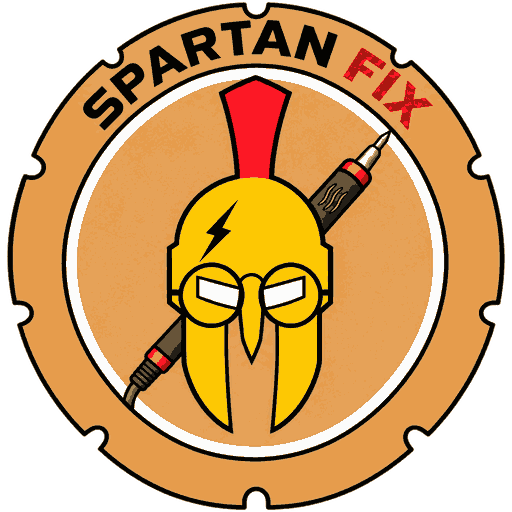

Com mais de 15 anos de atuação, a Spartan FIX é referência em soluções para computadores, notebooks, Macs e videogames.
Nossa equipe é formada por profissionais apaixonados por tecnologia e preparados para oferecer soluções reais e eficientes.
Não trabalhamos apenas com manutenção: entregamos performance, estabilidade e melhoria real no seu equipamento.
Você sabe exatamente o que está sendo feito, sem surpresas ou custos ocultos.
Somos gamers atendendo gamers. Criamos setups e soluções pensadas para alto desempenho e experiência imersiva.